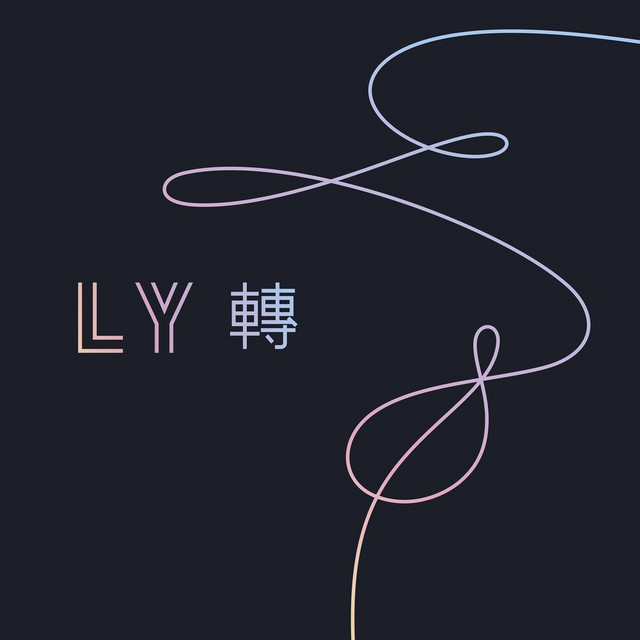

Un recorrido a través de la trilogía LOVE YOURSELF de BTS
La trilogía LOVE YOURSELF explora una idea que va cambiando a lo largo de tres álbumes: el amor puede comenzar dirigido hacia otra persona, convertirse en pérdida y conflicto, y finalmente llevar al descubrimiento de que el amor propio también forma parte de ese proceso.
Explora distintas etapas de la relación con el amor y con uno mismo. La historia comienza con LOVE YOURSELF 承 'Her', continúa con LOVE YOURSELF 轉 'Tear' y llega a su conclusión con LOVE YOURSELF 結 'Answer'. A lo largo, el amor pasa de estar dirigido hacia otra persona a convertirse en un proceso de pérdida, cuestionamiento, aceptación y, finalmente, amor propio.
El recorrido comienza mirando hacia afuera, atraviesa el momento en el que esa mirada se rompe y termina regresando hacia uno mismo.
TO LOVE → TO LOSE → TO FIND YOURSELF
LOVE YOURSELF 承 'Her'
El comienzo del amor

LOVE YOURSELF 承 'Her' representa la primera etapa del recorrido. El álbum presenta el amor desde el enamoramiento, la ilusión, la atracción y el deseo de conectar profundamente con otra persona.
Esta etapa muestra una visión luminosa del amor, pero también introduce una pregunta que se desarrollará a lo largo de la trilogía: qué sucede cuando la necesidad de ser amado comienza a influir en la manera en que nos vemos a nosotros mismos.
- Enamoramiento
- Ilusión
- Conexión
- Idealización
EL RECORRIDO
-
Intro: Serendipity El Encuentro
Representa el primer descubrimiento del amor.
La canción presenta el amor como un encuentro extraordinario entre dos personas. La conexión aparece como algo inesperado, pero profundamente significativo.
-
DNA La Conexión
La coincidencia se transforma en una conexión inevitable.
El amor se presenta como una conexión que parece estar profundamente ligada a quienes somos. La canción enfatiza la sensación de que ese encuentro estaba destinado a suceder.
-
Best of Me La Entrega
El enamoramiento se transforma en una entrega más profunda.
La relación comienza a implicar confianza y entrega emocional. Amar significa permitir que otra persona conozca y reciba una parte importante de nosotros.
-
Dimple La Fascinación
Representa la fascinación por el otro.
La atracción se concentra en un pequeño detalle de la persona amada. Algo particular puede convertirse en aquello que hace que alguien resulte irresistible.
-
Pied Piper La Atracción
Muestra el poder que puede tener aquello que nos atrae.
La canción utiliza la figura del flautista de Hamelín para jugar con la idea de una atracción tan fuerte que resulta difícil resistirse a ella. También funciona como una referencia a la relación entre BTS y sus seguidores.
-
MIC Drop La Seguridad
Recuerda que la identidad del individuo existe más allá de la relación amorosa.
La canción cambia el tono romántico del álbum para presentar una actitud de seguridad y orgullo frente a quienes cuestionan el éxito de BTS.
-
Go Go El Impulso
Representa el lado espontáneo de esta primera etapa.
Con una actitud despreocupada, la canción aborda el deseo de disfrutar el presente y actuar impulsivamente.
-
Outro: Her La Reflexión
La primera etapa termina dejando abierta una pregunta: qué ocurre cuando la imagen idealizada del amor comienza a desaparecer.
El cierre del álbum reúne distintas ideas sobre el amor y sobre las versiones de uno mismo que aparecen dentro de una relación.
TRANSICIÓN
El amor que comenzó como encuentro empieza a convertirse en ausencia.
El hilo continúa, pero cambia de dirección.
TO LOVE → TO LOSE
LOVE YOURSELF 轉 'Tear'
Cuando el amor comienza a romperse

LOVE YOURSELF 轉 'Tear' representa la segunda etapa del recorrido.
>El álbum presenta una visión más oscura del amor, pero también introduce una pregunta que se desarrollará a lo largo de la trilogía: qué sucede cuando la necesidad de ser amado comienza a influir en la manera en que nos vemos a nosotros mismos.
La ilusión de *Her* da paso a la pérdida, la separación y el conflicto. El problema ya no es únicamente perder a otra persona, sino enfrentarse a aquello que se perdió de uno mismo dentro de la relación.
La pregunta cambia:
¿Qué queda de mí cuando ese amor desaparece?
- Pérdida
- Separación
- Dolor
- Identidad
- Vulnerabilidad
EL RECORRIDO
-
Singularity El Cuestionamiento
Comienza el cuestionamiento de la propia identidad.
La canción introduce una sensación de aislamiento y de conflicto interno. Aparece la idea de esconder partes de uno mismo mientras se permanece atrapado en una situación emocional.
-
FAKE LOVE La pérdida de identidad
Amar deja de sentirse como una experiencia de libertad y comienza a convertirse en una pérdida de uno mismo.
La canción plantea qué ocurre cuando una persona cambia quién es para conseguir o conservar el amor de alguien más.
-
The Truth UntoldLa Vulnerabilidad
Representa el miedo a ser visto completamente.
Existe el deseo de acercarse a otra persona, pero también el miedo de mostrar aquello que realmente somos y no ser aceptados.
-
134340 La Ausencia
La persona que antes estaba en el centro ahora se encuentra lejos.
La canción utiliza la situación de Plutón como metáfora para representar a alguien que alguna vez ocupó un lugar importante y que después quedó distante.
-
Paradise La Pausa
Representa un momento de pausa dentro del conflicto.
La canción cuestiona la presión de tener siempre un gran objetivo y plantea la posibilidad de descansar y avanzar a nuestro propio ritmo.
-
Love Maze El intento de permanecer
Muestra el intento de encontrar una salida sin abandonar completamente la relación.
El amor aparece como un laberinto lleno de dudas y dificultades. A pesar de ello, permanece el deseo de encontrar un camino para continuar.
-
Magic ShopEl Refugio
Después del conflicto aparece la necesidad de encontrar un lugar seguro.
La canción construye un espacio simbólico de consuelo basado en la conexión entre BTS y sus seguidores.
-
Airplane pt. 2 El camino recorrido
Introduce la idea de mirar hacia atrás y reconocer cuánto se ha transformado la propia vida.
La canción reflexiona sobre el recorrido de BTS desde sus comienzos hasta su crecimiento como artistas.
-
Anpanman El deseo de ayudar
Muestra que no es necesario ser perfecto para tener un propósito.
Inspirada en el personaje japonés Anpanman, la canción presenta el deseo de ayudar a otros sin necesidad de convertirse en un héroe perfecto.
-
So What La Liberación
Representa el momento en que comienza a ser posible avanzar.
La canción adopta una actitud de liberación frente a las preocupaciones y el miedo.
-
Outro: Tear La Ruptura
Representa el final de una etapa y deja espacio para comenzar a reconstruirse.
El álbum llega a su punto de mayor tensión emocional. La relación con el amor que comenzó en Her termina enfrentándose directamente con la pérdida.
TRANSICIÓN
El hilo que conectaba todo el recorrido parece romperse.
Pero la historia no termina ahí.
Después de perder al otro, queda una pregunta diferente:
¿Quién soy cuando dejo de definirme a través de alguien más?
El recorrido continúa.
TO LOSE → TO FIND YOURSELF
LOVE YOURSELF 結 'Answer'
El descubrimiento del amor propio

LOVE YOURSELF 結 'Answer' funciona como la conclusión de la trilogía.
El álbum presenta una visión más madura del amor, que incluye la aceptación de la pérdida y el descubrimiento de que el amor propio es parte del proceso.
Después del enamoramiento y la pérdida, la historia cambia de dirección. La respuesta ya no se encuentra en otra persona, sino en la relación que cada individuo construye consigo mismo.
El amor propio aparece como un proceso de aceptación: reconocer las propias contradicciones, aceptar las imperfecciones y dejar de depender completamente de la mirada de los demás para definir quién somos.
- Aceptación
- Identidad
- Libertad
- Crecimiento
- Amor Propio
EL RECORRIDO
-
Euphoria La felicidad del encuentro
Recupera la emoción luminosa que dio origen a la búsqueda.
La canción presenta el amor como una experiencia capaz de transformar la percepción de la realidad. La presencia de otra persona se convierte en una fuente de felicidad y plenitud.
-
Trivia 起: Just Dance El amor como movimiento
Representa la espontaneidad y la alegría de compartir una experiencia con alguien más.
La canción expresa el enamoramiento a través del baile, la energía y la conexión entre dos personas. El movimiento funciona como una forma de expresar aquello que las palabras no siempre pueden transmitir.
-
Trivia 轉: Seesaw El desequilibrio
Representa la sensación de estar atrapado en un ciclo de altibajos emocionales.
La canción utiliza la metáfora del subibaja para describir la inestabilidad emocional que puede surgir dentro de una relación. La experiencia del amor se presenta como un proceso de constante cambio y adaptación.
-
Epiphany El Descubrimiento
Representa el momento en que comienza a descubrirse el amor propio.
La búsqueda del amor comienza a cambiar de dirección. Antes de esperar que alguien más nos ame, aparece la necesidad de reconocer nuestro propio valor.
-
I'm Fine La autonomía
Recuperar la autonomía después de la pérdida.
Después del dolor, aparece la posibilidad de estar bien sin depender de otra persona para encontrar estabilidad.
-
IDOLLa Identidad
Recuperar la propia identidad.
La canción cuestiona la necesidad de ajustarse a las expectativas externas y afirma la posibilidad de aceptar quién eres sin permitir que otros definan tu identidad.
-
Answer: Love MyselfLa RESPUESTA
La búsqueda que comenzó mirando hacia otra persona termina regresando hacia uno mismo.
La idea central de la trilogía llega a su conclusión: aprender a amarse implica aceptar quién eres, incluyendo las partes imperfectas y contradictorias que forman parte de ti.
EL SEGUNDO DISCO — ANSWER
El segundo disco de *Answer* reúne canciones y versiones adicionales de la trilogía. Su contenido complementa el recorrido musical y permite reconocer la continuidad entre las distintas etapas.
- Incluye canciones previamente publicadas en la trilogía.
- Incluye versiones alternativas de algunas canciones.
- Permite reconocer la continuidad entre las distintas etapas.
CONTENIDO
- Tracklist
- Magic Shop
- Best Of Me
- Airplane pt.2
- Go Go
- Anpanman
- MIC Drop
- DNA (Pedal 2 LA Mix)
- FAKE LOVE (Rocking Vibe Mix)
- MIC Drop (Steve Aoki Remix) (Full Length Edition)
Las primeras seis canciones corresponden a temas previamente publicados en la trilogía. Las últimas tres son versiones alternativas.